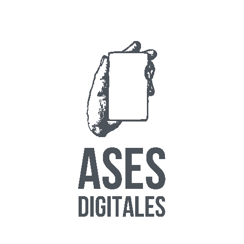

PROYECTOS

2023
Ases Digitales
Desarrollo de marca, diseño web y estrategia de redes sociales para agencia de comunicación digital
2021
Avatares Yoga
Desarrollo de marca, diseño web y estrategia de redes sociales para estudio de yoga

2020
Arcano Dos
Desarrollo de marca, diseño web y estrategia de redes sociales para tienda holística

2018
Mi Astro Coach
Desarrollo de marca, diseño web y estrategia de redes sociales para tienda holística

2016
Folio Club
Desarrollo de marca, diseño web y estrategia de redes sociales para tienda holística